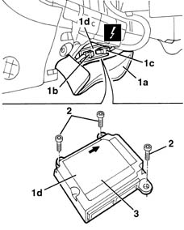
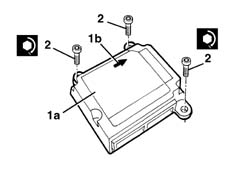

5580C14 air bag ecu - r+r
- Path
- Procedures > 55 ELECTRICAL EQUIPMENT > 5580 SPECIAL ACCESSORIES > 5580C air bag system > 5580C14 air bag ecu - r+r
- Kind
- repair procedure (removal / refitting; the operation number is the code)
- Applies to
- all engines; all production periods
- Interactive page
- https://sloeber94.github.io/elrnDB-lYpsln/en/#/2429451
Applies to: all engines; all production periods
Applies to: all engines; all production periods
 Removing
Removing
 Refitting
RefittingRemove the centre console lower side trim.
7040A30 Left instrument panel lower TRIM - R.R.
1. Working under the facia on the right, move the flap of carpet (1a) slightly and disconnect electrical connetions (1a) and (1b) of control unit (1b).
 | Name | Connector |
|---|---|---|
1b | Air bag control unit |
| Name | Connector |
|---|---|---|
1c | Air bag control unit |
2. Undo the bolts.
3. Recover the control unit

Applies to: all engines; all production periods
Refitting
RemovingFollow these precautions:
1. Position the control unit (1a). Make sure that the arrow (1b) on the upper surface of the control unit is pointing in the direction of travel.
2. Tighten the bolts to the recommended torque.
 | Fastening | Component | Ø | Value (daNm) |
|---|---|---|---|---|
2 | Bolt | AIR BAG CONTROL UNIT | M6 | 0.8 |

Applies to: all engines; all production periods
Connect the electrical connections .
Arrange the mat.
7040A30 Left instrument panel lower TRIM - R.R.
Fit the lower side trim.
Connect the battery.
Check the operation of the system using the Examiner or another tester.
Topics linked from this page (3)
- 7040A30 Left instrument panel lower TRIM - R.R.
- M60A Air bag control unit ( FACIA )
- M60B Air bag control unit ( REAR )